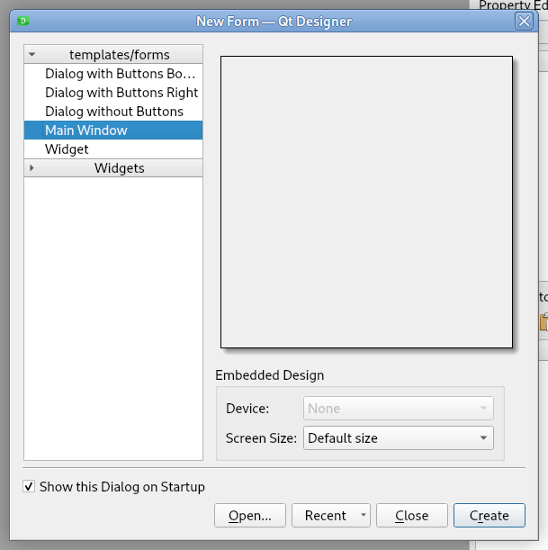
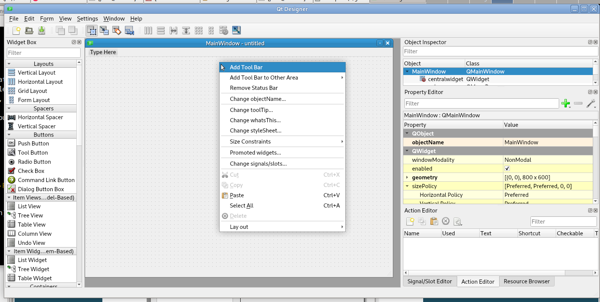
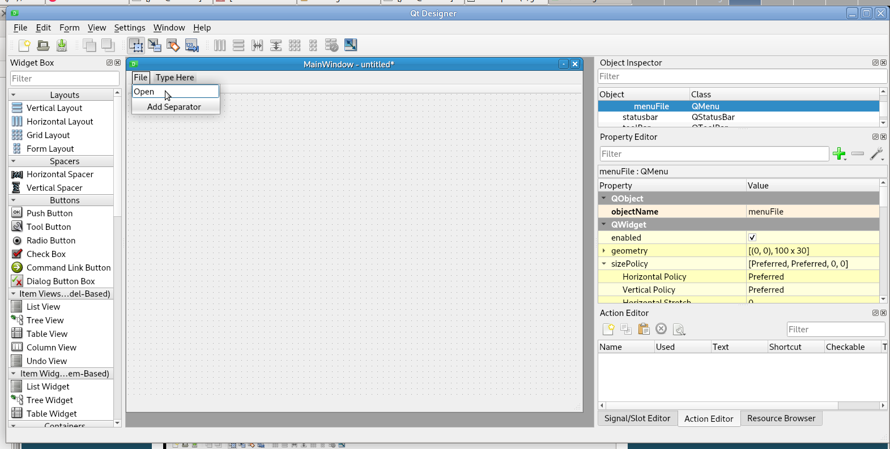
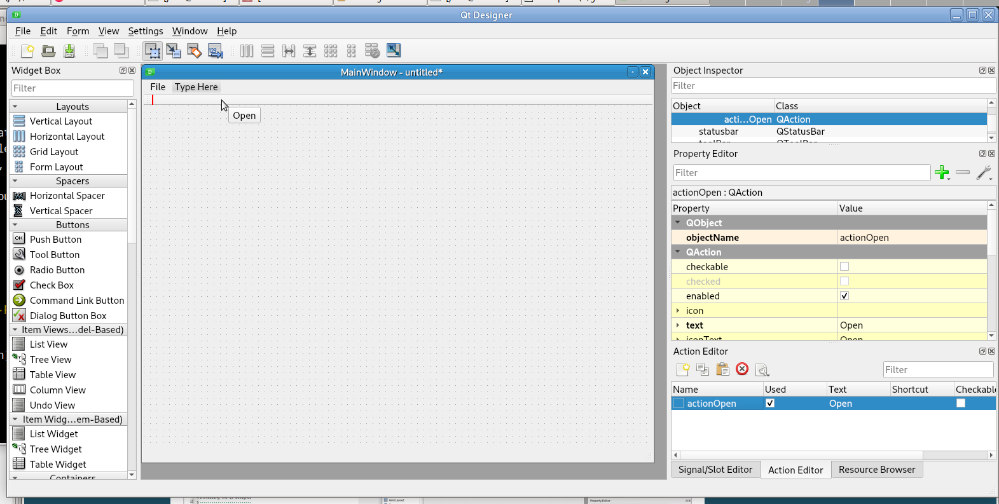
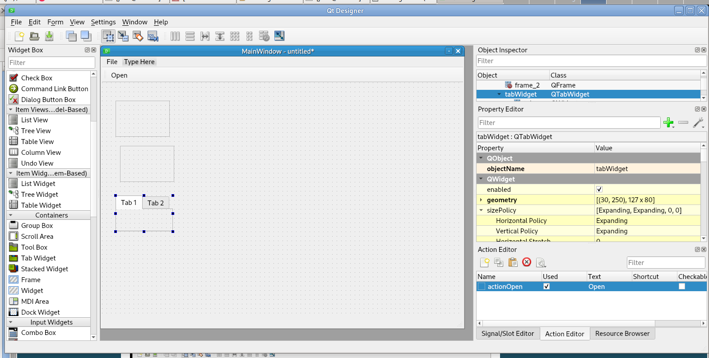
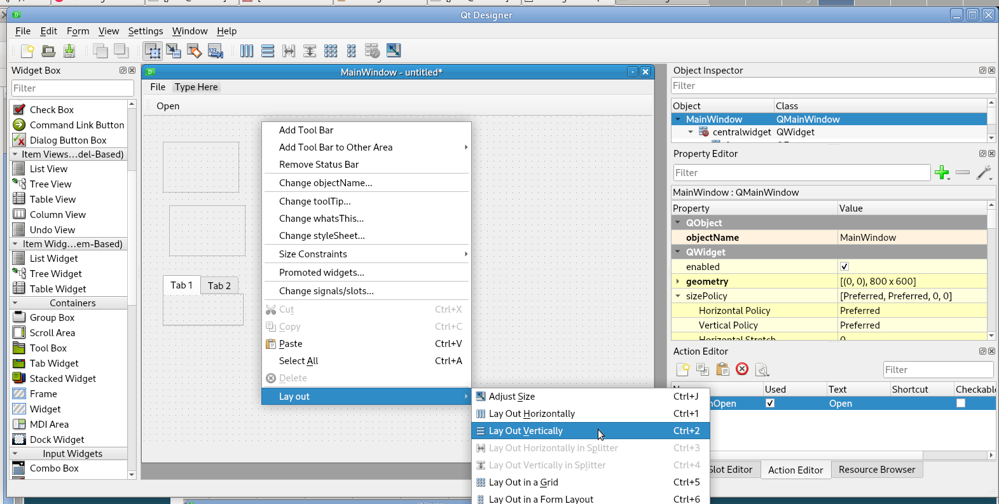
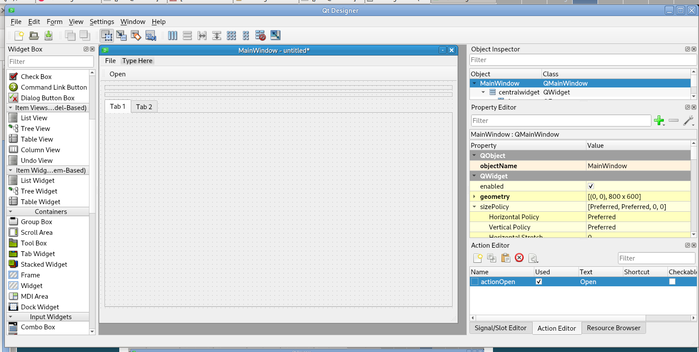
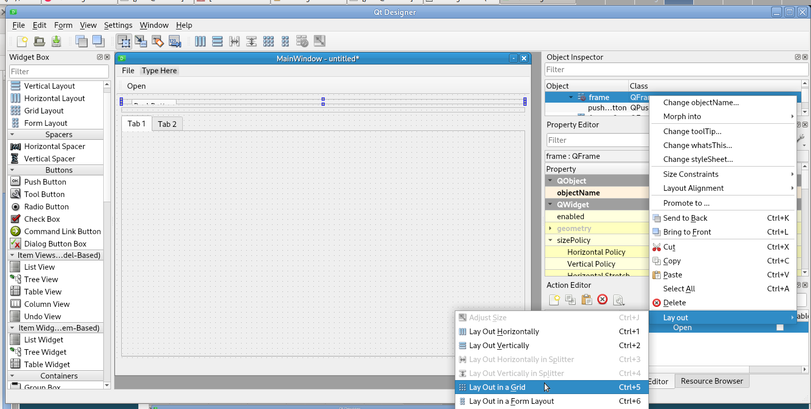
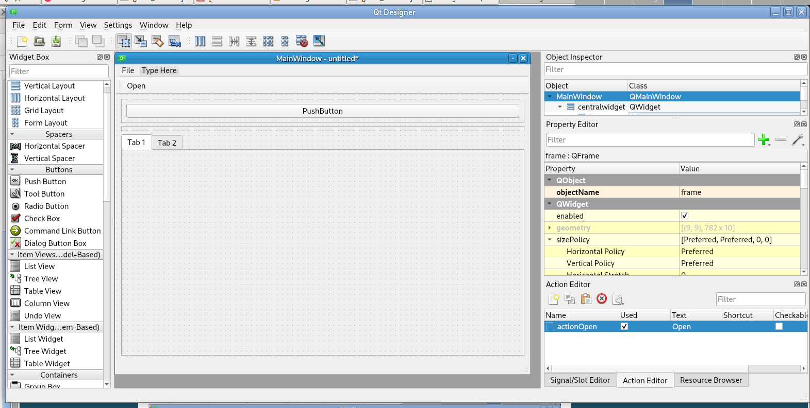

Qt Designer¶
Installing the Qt Designer¶
In a terminal, install Qt Designer 5 with
sudo apt install qttools5-dev-tools
Note
The Qt6 Designer is not required nor better; Qt5 Designer is fine.
Building a GUI¶
Run the Qt Designer from the Applications > Programming menu and create a new Main Window
To add a Tool Bar, right click on the main window and select Add Tool Bar
To add a Menu, type in the menu area and press enter
When you create a Menu item it creates an action; this action can be dragged to the Tool Bar to create a tool bar button
Adding items from the Widget Box is drag-and-drop. To create a basic layout from Containers, add two Frames and a Tab Widget
Right click in the QMainWindow and select Lay out –> Lay out Vertically
 Add a Push Button to the QFrame, then right click on the frame or the QFrame in the Object Inspector and set the lay out to grid
 After dragging a widget into the window, make sure you use the correct objectName for that widget. For example the E-Stop button is called estop_pb.
Note
Each object name must be unique; designer will not allow duplicate names.
Save the GUI in the configuration directory alongside your .ini file.
You can start Qt5 Designer from a terminal with designer & which spawns a new process (gives you back the terminal prompt.)
Note
There is an documented issue with Qt5 Designer and bold fonts not appearing properly.
Qt6 Designer¶
Qt6 Designer can be installed from a terminal with
sudo apt install designer-qt6
To run Qt6 Designer you must use the full path to the executable
/usr/lib/qt6/bin/designer